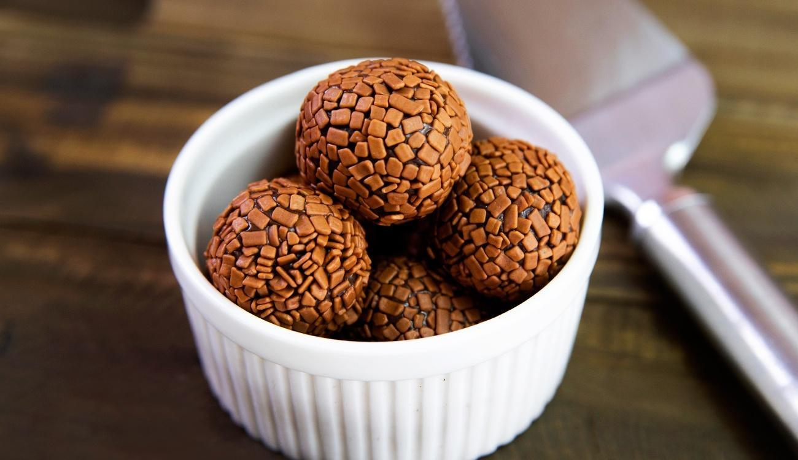

Brigadeiro

The most popular brazilian dessert
As a brazilian, i have to say that the Brigadeiro is the most popular dessert in Brazil.
Easy to do, yummi and pratice, the Brigadeiro has a legion of fans in the brazilian culture.
The name of the dessert would be a tribute to the brigadeiro of the brazilian airforce Eduardo Gomes.
Ingredients
All that you will need is
- Condensed Milk
- Butter
- Chocolate Milk
- Granulated Chocolate - if you wanna decorate your dessert.
Recipe Instructions
Since you have took all the ingredients that you'll need to make this happen, let's get into!
- First, open the condensed milk and pour in the pan
- Now, take a spoon of your butter and add with the condesend milk in the pan
- After this, mix the chocolate milk with butter and the condensed milk. Make sure that you use about three spoons of chocolate milk
- Alright, all that you have to do now is to mix these ingredients until become homogeneous. Be careful to the consistence of the dessert, 'cause is easy to burnt.
- After this, dump your dessert on a dish and let chill in your refrigerator
- Your brigadeiro is ready to serve, enjoy!
Return to top
Return to main page